Combate
El Combate es la habilidad asociada a la lucha contra Monstruos en Las minas, la Caverna Calavera o la Granja salvaje.
Durante los primero días en Stardew Valley las minas estarán cerradas por un accidente del MercaJoja. Alrededor del día 5, el jugador recibirá una carta de la Corporación Joja explicando que ya se ha retirado la piedra que bloqueaba el acceso a las minas. Por lo cual la entrada de las minas ya estará despejada. Hasta entonces, los combates sólo estuvieron disponibles para los que escogieron la Granja salvaje.
La experiencia de Combate se incrementa al derrotar monstruos. Cada nivel de Combate aumenta la salud en 5 y añade nuevas recetas. (Elegir la profesión Luchador al nivel 5 da +15 PV en lugar de los normales +5 PV, mientras que elegir las profesiones Explorador, Acróbata, Berserker o Bestia no darán PV adicionales).
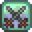 Habilidad de Combate
| Nivel 1 | Nivel 2 | Nivel 3 | Nivel 4 | Nivel 5 | |
|---|---|---|---|---|---|
| Permite fabricar: | Permite fabricar: | Permite cocinar: | Permite fabricar: | Choose a Profession: | |
| 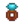 Anillo resistente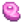 Filete de insecto | 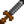 Luchador
|
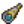 Explorador
(Nótese que el aumento es multiplicativo. La fórmula es: critChance = critChance * 1.5) | |||
| Nivel 6 | Nivel 7 | Nivel 8 | Nivel 9 | Nivel 10 | |
| Permite fabricar: | Permite fabricar: | Permite fabricar: | Permite fabricar: | Luchador: | Explorador: |
| 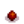 Munición explosiva | Anillo de iridio Ravioli de tinta de calamar | 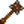 Bestia
(El efecto se multiplica con Luchador) |
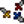 Acróbata
| ||
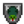 Defensor
|
(2x Daño por golpe crítico) | ||||
Nota: Los golpes críticos son multiplicadores, no aditivos. Incluso con todos los bonificadores, se aumentará como mucho en un 5-10%. Incluso en el mejor de los casos (la probabilidad real del crítico es desconocida y puede que tenga que ver con la suerte), con la Profesión de Berserker, muchas veces no compensa el daño ocasional con el adquirido con la rama de Luchador.
Puntos de experiencia
En la siguiente tabla se muestra la experiencia conseguida al derrotar ciertos monstruos.
| Monstruo | Experiencia |
|---|---|
| Baba verde | 3 |
| Duende del polvo | 2 |
| Murciélago | 3 |
| Murciélago de hielo | 7 |
| Murciélago de lava | 15 |
| Gólem de piedra | 5 |
| Larva | 2 |
| Mosca | 10 |
| Baba azul | 6 |
| Baba roja, Baba lila, Baba de cobre, Baba de hierro | 10 |
| Tío de las sombras | 15 |
| Fantasma | 15 |
| Cavadorín | 10 |
| Cangrejo de roca | 4 |
| Cangrejo de lava | 12 |
| Bola de fuego | 0 |
| Niño calamar | 15 |
| Guerrero esquelético | 15 |
| Bestia de las sombras | 15 |
| Chamán de las sombras | 15 |
| Esqueleto | 8 |
| Mago esqueleto | 8 |
| Cabeza de metal | 6 |
| Lanzador | 1 |
| Bicho | 1 |
| Momia | 20 |
| Baba grande | 7 |
| Serpiente | 20 |
| Pimienta Rex | 7 |
| Calavera encantada | 15 |
Bonificadores en las estadísticas
Consumiendo ciertas comidas o bebidas, llevando ciertas botas o anillos en particular, o con armas específicas, se consiguen ciertos bonificadores que afectan a los combates.
 Ataque afecta al daño que hace cada golpe con un arma.
Ataque afecta al daño que hace cada golpe con un arma.
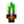 Daño crítico añade daño adicional a los golpes críticos.
 Defensa afecta al daño que recibe el jugador ante los ataques enemigos.
Defensa afecta al daño que recibe el jugador ante los ataques enemigos.
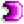 Inmunidad afecta a la habilidad del jugador de recuperarse de los estados alterados.
 Peso del arma afecta a lo lejos que se envían a los enemigos cuando los golpean.
Peso del arma afecta a lo lejos que se envían a los enemigos cuando los golpean.
 Velocidad del arma y
Velocidad del arma y  Velocidad del jugador tiene diferentes efectos en combate.
Velocidad del jugador tiene diferentes efectos en combate.
Probabilidad de golpe crítico
La probabilidad de golpe crítico se calcula con el siguiente orden:
- Cada arma tiene una probabilidad básica de golpe crítico. Por ejemplo, la Espada galaxia tiene una probabilidad de golpe crítico del 2% [1].
- En la v1.5, la Forja de acuamarina aumenta la probabilidad de crítico de manera acumulativa a través de la siguiente fórmula: probGolpeCrít += 0.046 * Nivel de recolección. Por ejemplo, con 3 aguamarinas forjadas, la probabilidad de golpe crítico aumenta en un 13,8% con la Espada galaxia, esto significa que la probabilidad es del 15,8 % [2].
- Si el arma es una Daga: probGolpeCrít = (probGolpeCrít + 0.005) * 1.12 [3]
- Si se usa un solo Anillo de acuamarina, la probabilidad de golpe crítico aumenta de manera multiplicativa en un 10%. Si se usan dos anillos de aguamarina, la probabilidad de golpe crítico aumenta de manera multiplicativa en un 20% [4].
- Entonces con la Espada galaxia, 1 anillo y 3 forjados: 15.8*1.1 = 17.38%.
- Con 2 anillos: 18,96%.
- Finalmente, la profesión Explorador aumenta aún más la probabilidad de golpe crítico de manera multiplicativa en un 50% con la siguiente fórmula: probGolpeCrít = probGolpeCrít * 1.5 [5]. Para la Espada galaxia con 2 anillos, 3 forjados y la profesión de Explorador, la probabilidad de crítico es: 18,96 * 1,5 = 28,44% La profesión Berserker aumenta el daño de los golpes críticos de nuevo por 2 después de aplicar todas las bonificaciones. Para más información sobre el tema mirar: Daño crítico.
Referencias
- ↑ Mirar weapons.xnb en el archivo del juego.
- ↑ Mirar StardewValley::AquamarineEnchantment.
- ↑ Mirar StardewValley::Tools::MeleeWeapon.DoDamage; la daga es arma tipo 1.
- ↑ Mirar StardewValley::Tools::MeleeWeapon.DoDamage y StardewValley::Objects::Ring.
- ↑ Mirar StardewValley::GameLocation.damageMonster.
| Habilidades y Estadísticas | |
|---|---|
| Habilidades | Agricultura • Combate • Minería • Pesca • Recolección |
| Estadísticas | Ataque • Daño crítico • Defensa • Golpe crítico • Inmunidad • Magnetismo • Peso • Suerte • Velocidad |